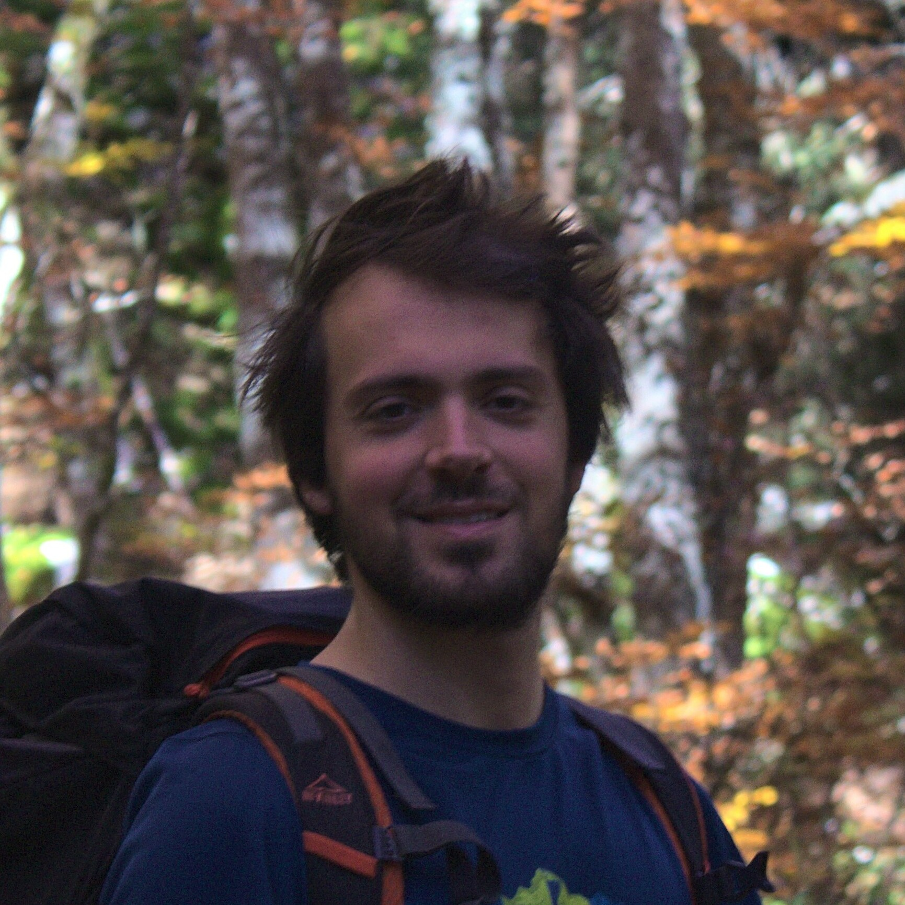

I am a forest ecologist currently working as a postdoctoral researcher at the LESSEM research unit of INRAE in Grenoble, France. My research focuses on understanding how disturbances (ungulate browsing, storms, fire) affect the dynamics of forest ecosystems, using mostly modeling approaches. I am also particularly interested in the role of functional traits to explain how trees and saplings respond to these disturbances. On this website, you can find my CV, publications, and presentations.
